First orders
Optional hints use your current battle and ordinary commands. Dismiss or restart them at any time.
You command the Federation ship named in the command console, initially Argo. Choose Classic or Reimagined in New game. Classic is turn-based; Reimagined offers turn-based battles, pausable real-time movement, and a sector campaign. These contents links change only the reference you are reading.
Start a turn-based battle — either ruleset
- Find your command ship on the map and check its name, shields, crew, and status in the console.
- Click a clear point inside the cyan engine ring, away from other hulls, to move. Or choose Engines (2) and enter a small ΔX / ΔY displacement. Working engines and freedom from a tractor lock are required.
- After an accepted maneuver, other captains act and the stardate advances. Read Your ship in the battle journal for your result, then Battle developments for milestones.
- Use Pass turn (P) when you want to hold position and let the next stardate resolve. If an enemy is in range, click its hull and choose Fire phasers instead of moving.
A target is not guaranteed to be in weapon range at the opening. Movement is enough for your first order. A rejected command explains its refusal; canceling a prompt or issuing an invalid order does not spend a turn.
Start a real-time battle — Reimagined
- Press Pause above the map before planning. Identify your command ship in the console.
- Click clear space to plot a course. Your ship confirms the destination; plotting it does not mean you have arrived.
- Press Resume to let the drive fly there. Pause again to inspect targets, range, or damage. Fire an available weapon when the shared command cycle is ready.
- Read your accepted command result and the later battle narrative separately: a launched torpedo may still be traveling. See real-time play for readiness and automatic conn.
Illustrations use staged example battles to make the controls easy to see. Your fleet, targets, and available commands may differ; follow the live names and readiness shown in your game.
Examples: find your ship and controls
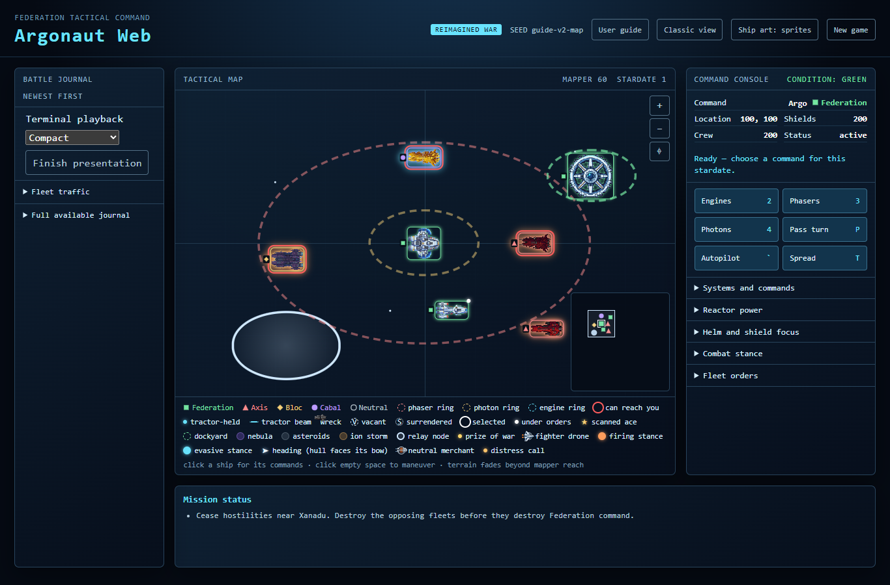
Screen orientation: use the map to choose a contact, the console to issue orders, and Your ship to recover your result. Full-size image (new tab)
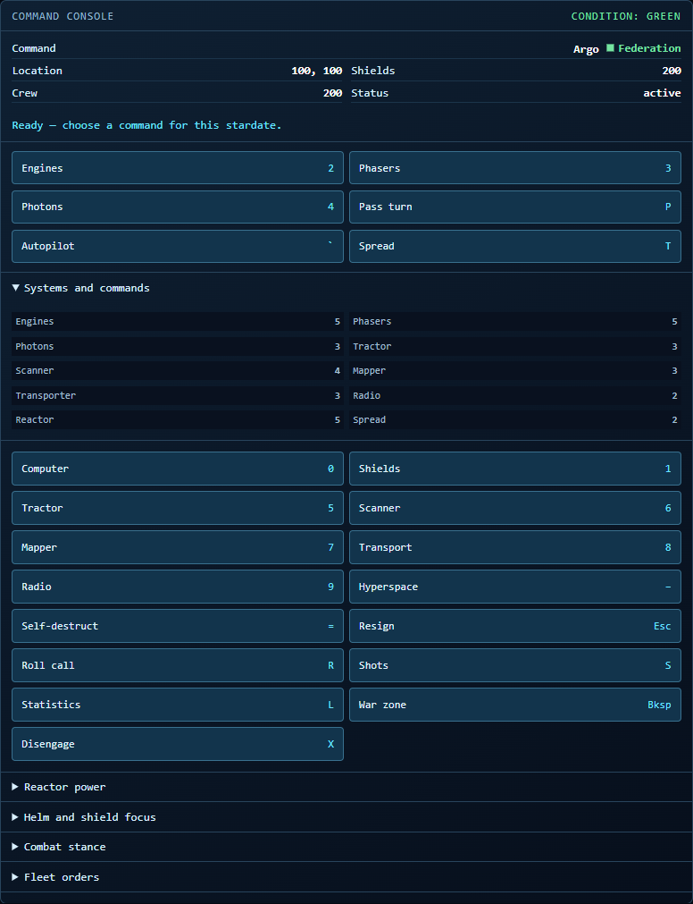
Movement and primary weapons stay close at hand. Expand Systems and commands for reports and the full command set. Full-size image (new tab)
Modes and options
New game suspends the current battle while the setup panel is open. Choose a seed, Ruleset, and options, then Begin. Starting a new war or campaign replaces the current saved session. Cancel or Escape keeps it and restores its previous running or paused state.
- Classic preserves the calibrated original rules and fixed fleets. With optional settings unticked, it is the original turn-based experience.
- Reimagined adds composed fleets, standing orders, doctrines, captains, repairs, and scenarios, plus terrain, power, prizes, and new weapons. Choose participating alliances, their budgets, your Federation loadout, and whether Xanadu is present. The Federation and at least one enemy are required; the flagship is required. Prizes won later do not consume the starting loadout budget.
- Real-time movement and Sector campaign are Reimagined options. Choose one: current campaign engagements use turn-based battles.
- Regional enemy formations clusters enemy fleets by alliance. Tactical sound enables combat sounds and the RED alert klaxon.
- Precision fire is an optional phaser setting for either ruleset. See called shots and power.
- Classic view changes the visual theme; Ship art changes modern map artwork. Neither selects Classic rules. See accessibility and appearance.
The same seed and options reproduce the opening. Later outcomes depend on your action sequence and, in real time, when you issue orders in simulation time. Matching only the seed does not guarantee the same result.
Example: Reimagined setup
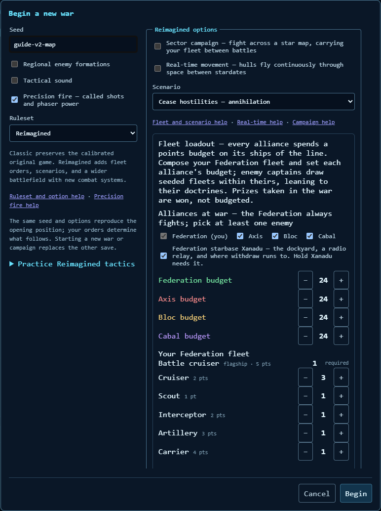
Choose the ruleset first, then its options. Begin starts the selected game; Cancel preserves the current session. Full-size image (new tab)
Map and targets
Alliance badges use shape as well as color: ■ Federation, ▲ Axis, ◆ Bloc, and ● Cabal. A hollow circle marks a neutral contact. The badge beside a hull and its minimap marker show current allegiance, including after capture. Historical journal entries keep the allegiance reported when the event occurred. Threat rings, selection, stance, and prize markers are separate cues. Crowded markers spread apart for readability; dotted tethers lead back to their actual positions. Minimap symbols also separate slightly. Neither display offset changes coordinates, range, or combat results.
Use the legend under the map to match alliance colors, range rings, threats, and status markers. Modern Ship art shows hull sprites; glyph view shows initials, with + for a destroyed wreck and D for a drone. A vacant hull has a surviving frame without a crew; it can be boarded. A wreck cannot. A captured Reimagined prize wears a gold pip.
- Range rings: red is phaser reach, yellow photon reach, cyan engine reach. The green ring at Xanadu marks the Reimagined battle dockyard. Engine reach is movement, not weapon reach.
- Red threat outline: that enemy can threaten your ship. It does not promise your own weapon can fire back or that a shot will hit.
- Click a hull to inspect its menu. Target commands depend on the target's state, working hardware, and range; Reimagined storm jamming can remove weapon choices. A displayed choice may still refuse if readiness or crew requirements fail. Escape closes the menu.
- Click empty space to move. Turn-based clicks beyond the engine ring are clamped to current reach. Real-time clicks set a destination that may take several stardates to reach.
- Local information: the tactical map uses mapper reach and visibility. Scanner (6) inspects one reachable hull; Mapper (7) lists local positions; Radio (9) reports reachable traffic. Damage and Reimagined terrain can limit these systems.
- War zone (Backspace) is the original full-map report: it lists all non-destroyed hulls and their coordinates, including contacts outside your tactical mapper. It is a separate report, not a sensor upgrade.
Navigate the wider Reimagined field
Wheel zooms toward the cursor; arrow keys pan. Drag the minimap to recenter the viewport. The camera follows your command ship until you pan or zoom; ⌖ restores following. The on-screen + and − buttons zoom. The keyboard - key opens Hyperspace, so use the displayed zoom buttons for zooming.
Examples: glyph view and a target menu
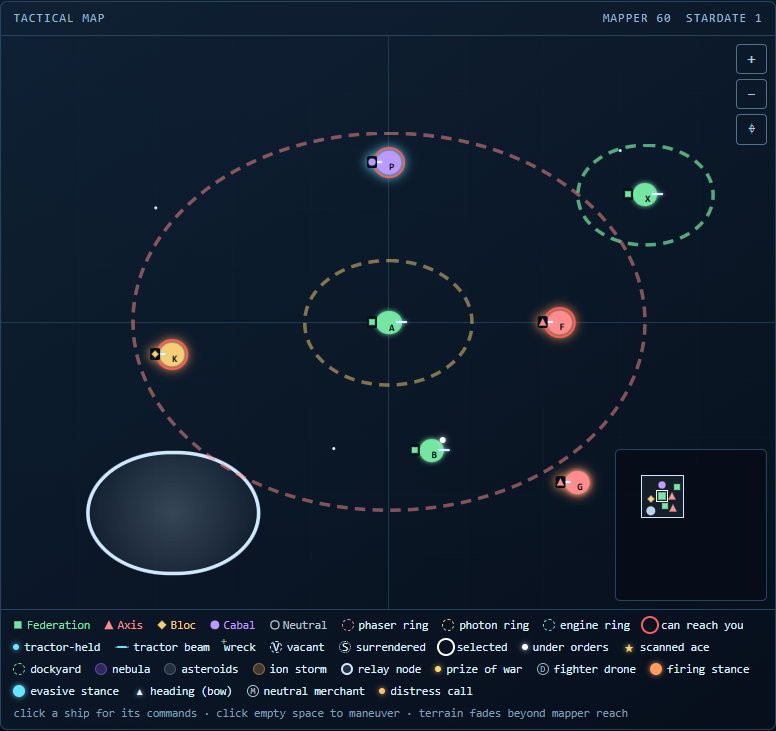
Glyph view changes the artwork. The badges, range rings, and actual positions keep the same meaning. Full-size image (new tab)
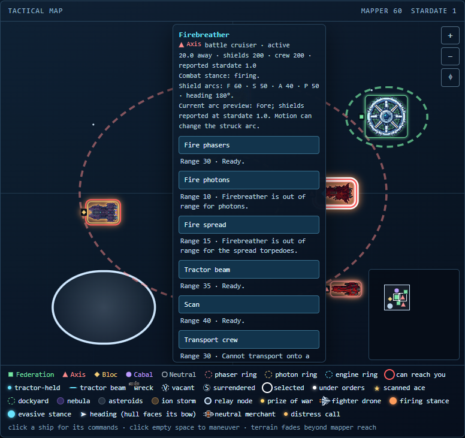
Inspect a contact before issuing an order. Available choices depend on current range, hardware, status, and readiness. Full-size image (new tab)
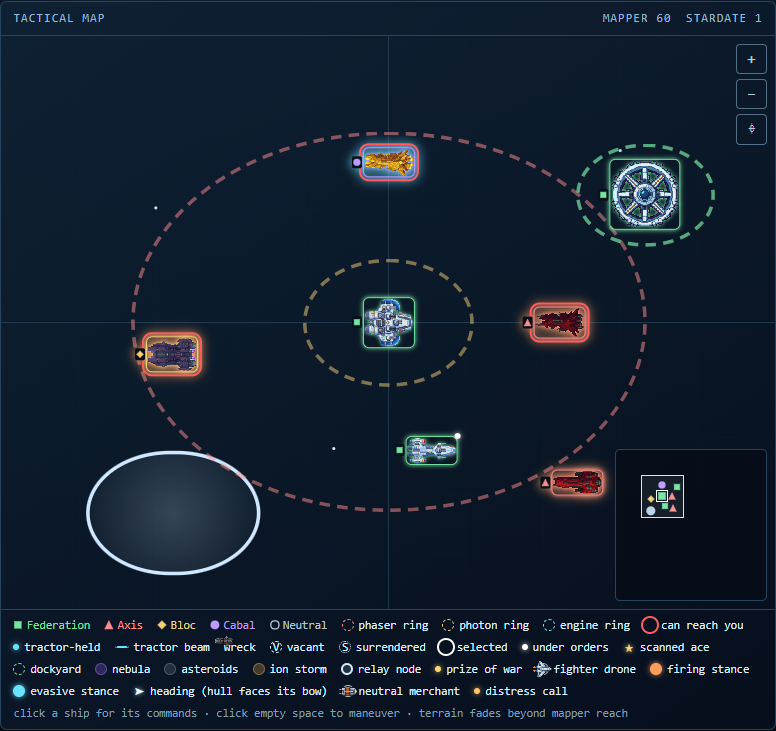
Sprite view: your rings measure your reach. An enemy threat outline describes its reach toward you; it does not promise a valid shot back. Full-size image (new tab)
Commands and time
The console keeps movement, primary weapons, passing or holding, and autopilot close at hand. Expand Systems and commands for the complete command set. Keyboard shortcuts work during play; dialogs own the keyboard. Menu commands can preselect the hull you clicked.
Target menus and weapon prompts show known distance, weapon reach, and an explanation when an action is unavailable. In real time, a spent shared command cycle is separate from a target being out of range. The selected hull is checked again on confirmation; if it moves out of reach or disappears, choose another target explicitly.
Turn-based cost: an accepted action marked “Turn” completes your turn, then other captains act. “Free” reports and configuration keep the current stardate. Real-time cost: “Cycle” commands share a readiness timer measured in simulation time; course changes, reports, and configuration do not spend that timer. A paused clock cannot recharge it.
Commands in both rulesets; the real-time column applies only to Reimagined real-time battles.
| Control / key | Use and requirements | Turn-based / real time |
|---|
| Computer 0 | Read the computer's assessment of local contacts and the war. | Free / Free |
| Shields 1 | Flush engine power into shields. Requires working engines and missing shields. | Turn / Cycle |
| Engines 2 | Enter ΔX / ΔY or click clear map space. Requires engines; a tractor-held ship cannot maneuver. | Turn / Free course change |
| Phasers 3 | Fire an energy volley at an active enemy in phaser range. Live phaser units affect damage. | Turn / Cycle |
| Photons 4 | Fire a heavier, shorter-range torpedo. Requires live photon units and an active enemy in range. | Turn / Cycle |
| Tractor 5 | Pull a movable active enemy in tractor range. Reimagined also offers Direct tow… and towing a friendly distress hull. Tractor-held hulls cannot maneuver or dock. | Turn / Cycle |
| Scanner 6 | Inspect a hull within working scanner reach and visibility. Reimagined scans reveal captain details. | Free / Free |
| Mapper 7 | Read exact local positions. Requires working mapper hardware. | Free / Free |
| Transport 8 | Reinforce a friendly ship or board a vacant hull. Requires transporter reach and enough crew to leave people aboard your ship. See boarding below. | Turn / Cycle |
| Radio 9 | Read reachable radio traffic. Requires working radio; storm cores jam it in Reimagined. | Free / Free |
| Hyperspace - | Confirm a blind jump. Weakens shields, escapes a tractor lock, and risks burning up or colliding on arrival. | Turn / Cycle |
| Self-destruct = | Confirm destruction of your hull with a blast and shrapnel that can hit other ships. Xanadu has an especially large blast. | Turn / Cycle |
| Pass turn P | Hold position. In real time, Hold position cancels your course; it does not advance the paused clock. | Turn / Free hold |
| Autopilot ` | Let your captain act for one turn; in real time toggle automatic conn, the control of your ship. | Turn / Free toggle |
| Resign Esc | Confirm handing Federation command to autopilot and watch the rest of the war. This is final. | Ends player command |
| Roll call R | List the hulls and their condition. | Free / Free |
| Shots S | Read shot distribution. | Free / Free |
| Statistics L | Read alliance statistics. | Free / Free |
| War zone Backspace | Read the full map report described above. | Free / Free |
Reimagined commands and configuration.
| Control / key | Use and requirements | Turn-based / real time |
|---|
| Fleet orders F | Read the fleet's standing orders, prizes, captains, and condition. | Free / Free |
| Launch drones D | Open the command carrier's unspent bay. Other carriers can receive a launch standing order. | Turn / Cycle |
| Ion I | Fire a shield and subsystem suppression beam. Requires an ion emitter and target in range. | Turn / Cycle |
| Spread T | Fire an area torpedo salvo. Requires spread tubes and target in range; nearby allies risk splash. | Turn / Cycle |
| Disengage X | Burn away from the nearest enemy. Requires engines, an enemy, and freedom from a tractor lock. | Turn / Free course change |
| Friendly hull menu | Assign a standing order; targeted orders ask for a ward or target. | Free / Free |
| Maintain tow / Release tow | Select an active crewed friendly hull within tractor range and at least 5 units away. Establish one tow, then move both hulls together at reduced speed. Release before docking the passenger, using directed pulls, jumping, or handing conn to autopilot. | Turn / Cycle |
| Refit in friendly hull menu | Choose one refit per hull per battle inside an allied dockyard ring. | Free / Free |
| Reactor power | Adjust console sink pips within the current reactor budget. | Free / Free |
| Combat stance | Set Standard, Firing, or Evasive in the console or a friendly hull menu. | Free / Free |
| Helm and shield focus | Turn the hull or choose the arc recovered first; also available in friendly hull menus. | Free / Free |
Tab passes only when focus is away from interactive controls; on a button, link, or form it navigates normally. Use P for a deliberate pass. Hyperspace, self-destruct, and resign require confirmation. Cancel closes a prompt without accepting an action.
The Battle journal keeps your last twelve command cards in Your ship, independently of fleet traffic. Expand a card for its confirmed consequences; traveling ordnance stays pending until its later result arrives. Battle developments highlights observable milestones. Expand Fleet traffic for other available reports or Full available journal to filter retained events. While reading older entries, new arrivals are counted; Return to latest brings you back. The journal is saved with the battle and reports when older detail has been discarded. Information reports appear in the mission panel.
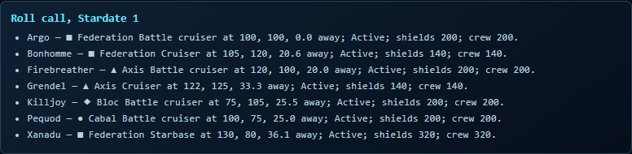
Read status alongside crew and shields: a vacant frame can be boarded; a destroyed wreck cannot. Full-size image (new tab)
Understanding combat
A valid shot can miss. Damage varies with the weapon, surviving units, and ruleset; Reimagined power, stance, terrain, and crew condition also matter. Read the result for hit or miss and damage rather than treating range or readiness as a hit prediction.
- Shields and systems: damage past shields can kill crew and disable hardware. Fewer live units reduce the affected system's performance. Zero crew can leave a vacant frame; destruction leaves an unboardable wreck.
- Command loss: losing your command ship transfers command to a surviving Federation hull where possible. With no Federation command left, you watch other alliances finish. Resigning hands play to autopilot.
- Tractor lock: a held ship cannot maneuver or dock. Its cyan pip and console identify the hold; a hidden source may read “an unseen hull.” Hyperspace or destruction of the holder ends the lock. A tow can cause a collision.
- Collisions: overlapping hulls can destroy one and cripple the other. Ordered rams, tractor slams, and hyperspace arrivals are dangerous even when guns are not involved. In Reimagined, the end-game report credits enemy kills caused directly by an active tow, including after command transfer. A crippled survivor is not a kill; these report credits do not increase ace or vendetta bonuses.
- Endings: standard wars resolve surviving alliances, surrender, and stranded-fleet draws. Reimagined objectives can also decide the war. A battle outcome is distinct from a campaign outcome.
- Playback: Compact groups consecutive routine losses from one resolution for 700 ms; your ship, objectives, alliance surrender, and battle completion receive 2000 ms. Full sequence shows each terminal card for 2500 ms. Expand the latest resolution to read every member, or use the journal for earlier events. Finish presentation ends a display or historical replay, retaining the journal and your paused state. Replay round uses frozen available facts; commands stay locked during playback.
Classic tactics: enemy fleets concentrate on a shared target; a vendetta ship hunts you personally. Concentrating your own fire and preserving usable engines are useful responses. These are tactical choices, not requirements for a legal command.
Precision fire — optional in either ruleset
Enable Precision fire in New game. The phaser prompt adds Called system and Phaser power. Standard targeting damages normally. A called shot trades general damage for damage to the selected subsystem without crew casualties; shields still protect the target. Lower power can leave a surviving frame rather than destroying it. The enemy continues using standard volleys.
With Precision fire or Reimagined rules, a crewed hull stripped of engines, phasers, and photons can strike its colors at the stardate boundary and become vacant. Starbases, neutral merchants, and your command ship while you retain command are exempt. Confirm vacant status before trying to board.
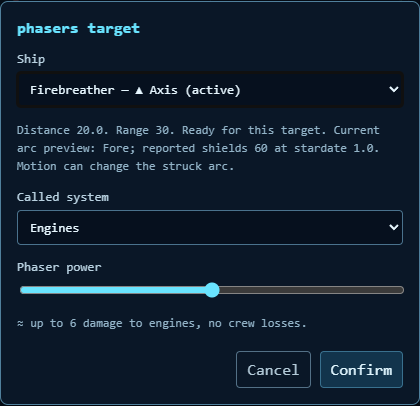
This example targets Engines at half power. Shields still protect the target, and neither accuracy nor a surviving prize is guaranteed. Full-size image (new tab)
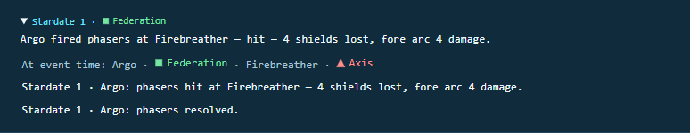
Read the confirmed consequence in your own command card: this hit removed four shields from the target’s fore arc. Fleet activity cannot evict your last twelve command cards. Full-size image (new tab)
Reimagined fleet command
The former fleet-command reference is now part of Reimagined fleet command. Choose Reimagined in New game to use these systems.
Give a standing order
Click a friendly active hull and choose Focus with fleet, Hold position, Withdraw, Escort…, Screen…, or Intercept…. Escort follows a friendly ward; Screen protects one against nearby threats; Intercept pursues a named enemy. Board and Launch drones are available for suitable targets or carriers. Targeted choices ask for the target.
Orders are free and persist until changed. In radio contact, the hull acknowledges immediately; out of contact, the result says the order will arrive next stardate. Check Fleet orders (F) for pending or current orders. Your own hull follows its standing order when autopilot has the conn. Without Xanadu, Withdraw heads toward the fleet rather than a base.
Repair and refit during a battle
Bring an active friendly ship inside an allied Xanadu dockyard ring and let a stardate boundary resolve. Docking gradually recovers shields and crew, and repairs a unit of its worst-damaged subsystem. Confirm recovery in the narrative and condition report. Starbases, drones, and tractor-held ships do not dock. The base must be active, friendly, and have at least 50% of its shield capacity; a heavily damaged base cannot provide repairs or refits.
Inside the ring, the friendly hull menu offers a free refit once per hull per battle: Re-arm, Overcharge, Tune drive, Deep sensors, or Reactor upgrade, subject to hardware limits. The result confirms the added units. This differs from paid between-battle campaign services.
Read captains and doctrines
Scan hulls to learn their captains. Kills can make a captain an ace, marked by a star; an experienced vendetta hunter becomes more dangerous. Enemy alliances have distinct doctrines: Axis closes aggressively, Bloc favors phaser distance, and Cabal favors tractor tactics. The fleet report helps you follow your own captains and orders.
Choose a scenario
- Cease hostilities — annihilation: the standard surviving-alliance war.
- Hold Xanadu: keep the base standing until stardate 30. Losing the base fails the objective. This choice requires Xanadu in the loadout.
- Hunt the hunter: scan the hull commanded by your named hunter before it leaves the fight, then end the vendetta by destruction, surrender, or capture. If it leaves before you identify it, the opportunity is lost.
The mission panel shows objective progress. Standard war endings can resolve before the scenario objective, so protect the fleet as well as the objective.
Example: a friendly hull’s standing orders
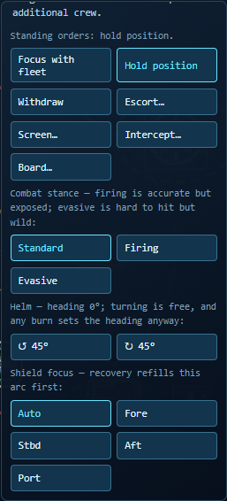
Choose an order for this hull, then check its acknowledgement or pending delivery in Fleet orders. Full-size image (new tab)
Reimagined tactics
Allocate reactor power
Expand Reactor power in the console. The spent / budget readout limits your allocation across shields, weapons, engines, sensors, and tractor; use each sink's minus and plus pips. Setting power is free and saved. Lower another allocation if the reactor cannot spare the power. Reactor damage reduces the budget; docking and Reactor upgrade can restore or increase it.
Weapons power scales damage, engines scale movement, sensors scale scanner/mapper/radio/transporter reach, and tractor scales pull. Surplus shield allocation regenerates shields at stardate boundaries. The live effectiveness readout shows the trade you are making; allocating beyond a sink's useful ceiling gives no further benefit.
Use stance, heading, and shield arcs
Expand Combat stance: Standard is neutral; Firing improves your accuracy while making you easier to hit; Evasive protects you at the expense of your accuracy. Stance is free and persistent, and friendly hull menus can set it too.
Expand Helm and shield focus to turn without moving or prioritize shield recovery. Crewed ships have fore, starboard, aft, and port arcs; the bow is strongest and stern weakest. Aimed primary weapon hits burn the struck arc first, with some overflow bleeding to other arcs and the rest reaching crew and systems. Low shields on an exposed arc can admit damage despite shields elsewhere. Blasts, ion, collisions, rocks, and secondary spread splash distribute damage across arcs. Weapons can fire in every direction; heading affects protection.
Moving sets your heading. Free Helm turns can change the exposed arc without spending your action. Shield focus routes regeneration, engine flushes, and docking recovery into the chosen arc first; Auto restores the weakest first. Drones have no shield arcs.
Route through terrain and hold relays
Reimagined maps use the same distance scale horizontally and vertically. Use the scale bar to judge distance, and Terrain art and Hazard edges above the map to compare materials or emphasize boundaries. Each asteroid boundary encloses one continuous hazard: gaps between painted rocks are still hazardous. An ion storm's hatched inner circle marks its radio-blocking core; the outer ring degrades radio. The extraction beacon's dashed circle is the evacuation region, not a repair station. These presentation controls never spend a turn or change terrain rules.
Contacts: Adaptive switches crowded Reimagined ships to small tactical markers while isolated ships keep their artwork. Full artwork and Compact are available in the same control. Markers retain faction shapes, initials, heading and status; a red corner indicates a ship that can reach you, and a white outline identifies selection. Zoom in to separate contacts, or use Visible ships to select a named vessel and center its commands. The list includes only current mapper contacts, excludes wrecks, and never issues a movement order. Escape closes its command menu and returns focus to the selector. These preferences apply to the rescue prototype and ordinary Reimagined games; Classic keeps its existing markers.
- Nebula: a hull inside can be hidden from outside mapper, scanner, and radio beyond short sensor reveal reach. Sharing the nebula restores sight. Terrain geography remains visible beyond mapper range.
- Asteroids: fire crossing a field is less accurate. Ending movement or a tow inside can cause a shield-damaging rock strike; passing through does not trigger that arrival hazard.
- Ion storm: the core jams weapons and radio; the outer ring worsens firing accuracy and reduces radio reach. Engines and tractor still allow an escape.
- Relay: an eligible hull inside at stardate end holds the node for its alliance, increasing its reactor budgets. Tractor-held hulls cannot claim it. Competing alliances contest the node; leaving relinquishes it. The colored ownership ring is public information.
Tow, board, and reinforce
Choose Direct tow… from an eligible enemy or friendly distress hull's menu to aim your tractor pull at coordinates or another hull. You choose direction, not extra pulling distance. It costs the normal tractor action or real-time cycle. Immovable hulls, broken tractor hardware, and range can prevent the order. A friendly distress hull can also be towed home.
Maintain tow is available in ordinary Reimagined games and the rescue prototype. Establish it once, then use normal movement: both ships keep their current separation and move at the lower of engine and tractor capacity. In real time they follow your plotted course together. Engines previews both destinations; known hull obstructions or map edges refuse a maneuver, and a newly encountered obstruction stops a real-time course. Both ships remain exposed to weapons, collisions and asteroid strikes. The passenger can defend itself but does not independently maneuver. Loss of the tug, tractor power, friendly ownership, command, or the connection ends the tow with a journal notice. Release tow frees the passenger for movement and docking repairs.
In Rescue at the Belt, select Sentinel → Maintain tow, then use Engines or click the map to approach the beacon. Either linked ship entering the ring evacuates both ships together, provided the tow survives combat. Keep the tow attached. Aim for elapsed stardate 16; late recovery remains possible through the final evacuation at 22. For a one-off repositioning pull, choose Single pull toward extraction…: this still requires Sentinel itself to enter the ring. An ordinary tractor pull reels the target toward your ship and can collide with it. A predicted collision with a visible hull requires an explicit acknowledgment; the preview does not predict later enemy moves.
To delegate in the turn-based prototype, select Bulwark → Rescue Sentinel. That captain approaches, establishes a maintained tow on one turn, then hauls the pair to extraction on subsequent turns. Swift can also rescue, but its smaller tractor makes hauling slower. An unconfigured tug uses balanced reactor power; explicit manual allocations are preserved. The operation panel shows approach, connection, hauling, completion and blockers. Continue commanding Argonaut and advancing turns normally. Replace the tug's order with Hold or Withdraw to cancel; out-of-contact replacements take effect when delivered next stardate. Taking command of the tug releases its delegated link and suspends its order while you command it. Rescue orders currently apply only to this prototype; ordinary Reimagined retains manual maintained towing.
In the prototype, select Swift → Recover prize to investigate Wayfarer while Bulwark rescues Sentinel. Boarding commits up to 10 crew, leaving at least one aboard the captain’s ship. The prize and captain then withdraw independently under their real engine limits; a small prize crew slows Wayfarer. Capture alone is not recovery: the prize must enter the beacon before final evacuation. Progress continues after the boarding captain evacuates. Replacing the captain’s order does not undo the crew transfer or stop Wayfarer; select the prize to change its own orders. Damaged or unpowered prize engines need repair or a manual tow. Keep Argonaut outside the beacon until the other tasks finish if you want to avoid taking command of a still-withdrawing ship.
Use Transport (8), Board ship on a vacant hull, or Transport crew on a friendly one. The transporter must work and reach the target; send a positive whole crew amount while leaving crew on your source ship. A live enemy cannot be boarded directly, except a neutral merchant that can be seized. Wrecks and drones cannot be occupied.
For autonomous boarding, give a friendly hull Board… with a valid vacant target. It approaches and sends its own party when eligible. In Reimagined a captured prize receives a captain and Withdraw order; the fleet report and gold pip identify it. A skeleton crew weakens engines and weapons until you reinforce or dock it. If its crew is lost, the frame can become vacant and be captured again. Enemy captains also race for prizes.
Use new hulls and weapons
Interceptors favor speed; artillery favors powerful long-range fire; carriers provide crew, towing, and a drone bay. Hardware determines which weapons appear. Ion (I) consumes shields and burns subsystem units without killing crew; a disabled hull may become a prize. Spread (T) hits its primary target and splashes nearby hulls with damage decreasing by distance. The shooter is spared, but its allies are not. A missed salvo produces no splash. In real time, spread damage waits for the ballistic impact.
Flying a carrier, Launch drones (D) spends an action or cycle to release its wing. A carrier's Launch drones standing order waits until an enemy closes. The wing escorts its carrier and engages threats; you can give drones standing orders. Drones are uncrewed, unboardable, and excluded from victory counts. They can fight after losing the carrier, but go dark when their alliance has no crewed hull left.
A carrier launches one complement during a battle; the battle dockyard cannot refill it. A captured carrier brings its existing wing. Campaign dockyards can sell a bay rebuild between battles.
Respond to encounters
Derelicts offer vacant frames to board. A friendly distress hull can be towed toward home or helped by transferring crew; remember that a tractor-held hull cannot receive docking recovery. Leave it too long and its crew abandons it. Neutral merchants avoid warships and depart after a limited visit. They do not count toward victory or relay control; a transporter party can seize one as a prize.
Example: a relay changes the reactor budget
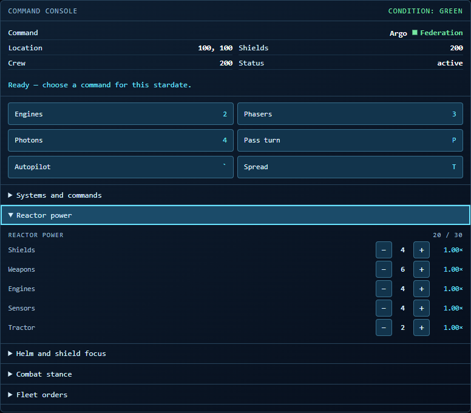
An uncontested held relay adds reactor capacity. Spend within the displayed budget and check the resulting engine, sensor, weapon, and tractor effects. Full-size image (new tab)
Real-time play — Reimagined
Pause, plan, and resume
Use Pause / Resume above the map, or Space while focus is away from controls. Commands remain available while paused, subject to readiness. Use the speed buttons or , / . to change pacing; speed changes how quickly simulation time passes, not weapon damage.
Opening the user guide suspends a live real-time battle with Paused for help. Close or Escape returns you to the controls with the battle still paused. Press Resume when ready. Gameplay shortcuts remain inactive while the guide owns focus.
Plotting is different from arriving
An engine order sets a destination; the drive flies there continuously at its current engine effectiveness. You can replace the course freely, even while paused. Hold position (P) clears it. Disengage plots a burn away from the nearest threat. The cyan ring shows one stardate's engine reach; it does not limit a distant destination.
Read the shared command cycle
Weapons, shields, tractor, hyperspace, transport, drone launch, and self-destruct share one simulation-time cycle. Once accepted, the next of these must wait until readiness recovers. Reports, settings, and course changes remain free. While paused, simulation time and cooldown recovery stop; Resume lets them progress. Canceling or receiving a refusal does not consume readiness.
Wait for ballistic impacts
Photons and spread torpedoes travel through space before detonating. A launched shot is not a confirmed hit: a moving target can evade, and a warhead can arrive in empty space. Its command card in Your ship links the later impact and its time. An unobserved result reads outcome unknown. Phasers and ion resolve as instant beams. Tractor tows move smoothly; a tow or ordered ram can collide during travel.
Take back the conn
Autopilot (`) toggles automatic conn: the captain chooses your ship's orders at stardate boundaries. A manual burn or volley takes control back. Other captains, docking, regeneration, relay ownership, and encounters still resolve at boundaries while hulls move between them.
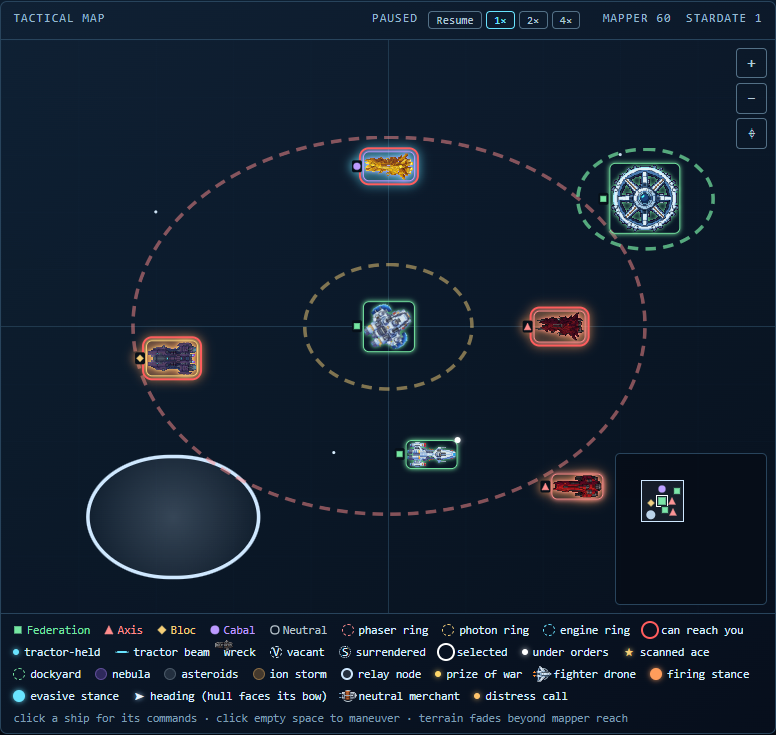
Pause before planning. Resume advances simulation time; speed controls change its pace. A plotted course needs running time to reach its destination. Full-size image (new tab)
Example: command readiness while paused
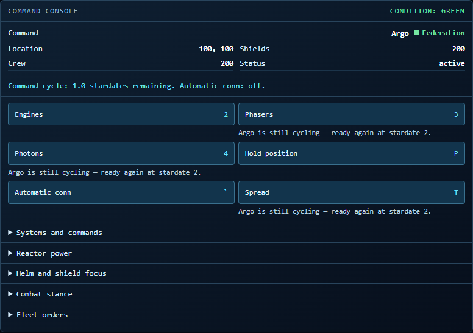
The prior shot spent the shared cycle. Plotting a course is free, but the timer cannot recharge while paused. Hold position cancels the course; Automatic conn lets your captain choose orders. Full-size image (new tab)
Sector campaign — Reimagined
Travel and enter a battle
Choose Sector campaign in New game. On the sector screen, click a system to inspect it and follow connected bright routes using Travel. At an enemy system choose Engage to command the turn-based battle yourself or Auto-resolve to let your captains fight it. Auto-resolve applies real losses and gains to your campaign fleet. Travel can be blocked by an engagement or defensive raid awaiting resolution.
Understand what carries forward
After a finished engagement, return with the displayed sector control. Surviving fleet hulls carry shields, crew, damaged systems, prizes, captains, kills, and spent drone bays forward. Orders, power allocations, stance, facing, and positions reset for the next engagement. Read the veteran fleet condition and campaign report before fighting again.
Capturing an enemy system earns credits; carrying out a new prize earns its one-time class bounty. Capturing the enemy home objective wins the campaign. Losing the entire carried fleet or losing Xanadu in a defense ends it.
After returning, expand the Debrief to compare entering condition with new damage, survivors, losses, prizes, and the actual credit change. Reopen engagement debriefs reads saved results without awarding anything again. Under Your fleet, expand a ship’s service record for confirmed milestones. The Campaign memorial retains lost hulls; a lost hull does not establish its captain’s fate.
The latest 50 engagement details and 24 milestones per hull are retained alongside lifetime counts and final losses. Older or unavailable detail is labelled explicitly. Docking alone is not recorded as a rescue.
Buy dockyard services
At Xanadu or another Federation-held system, expand Dockyard offers between engagements. Each lists its credit cost: shield repair, crew replenishment, system overhaul, refits, spent drone-bay rebuilds, and new commissions. Select an affordable eligible offer and check the changed credit balance and hull condition. Refits can be purchased again within hardware limits; commissions are limited by the purchase point budget, while prizes do not spend it. Paid services do not consume a battle stardate.
Draws, abandonment, and raids
A draw or retreat at an enemy system leaves that system in enemy hands and carries out surviving hulls in their end condition. Abandon engagement confirms leaving the battle; abandoning a defense cedes the friendly node to its attacker. A drawn or stalled defense holds the friendly node if the fleet survives; losing or abandoning Xanadu's defense ends the campaign.
Enemy alliances also contest systems, occupy empty ones, and raid yours as campaign turns advance. A raid at your fleet's system becomes a defensive engagement; a strike on Xanadu recalls the fleet home. Resolve that defense before traveling. Garrisons resolve raids elsewhere. The campaign report tracks outcomes, holdings, credits, prizes, and aces.
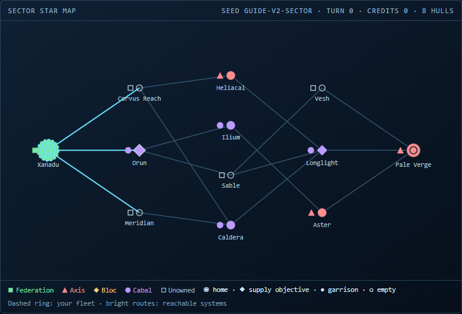
Select a connected system to inspect it before travel. Engagements and defensive raids can block the next move. Full-size image (new tab)
Examples: debrief, veteran, and paid dockyard services
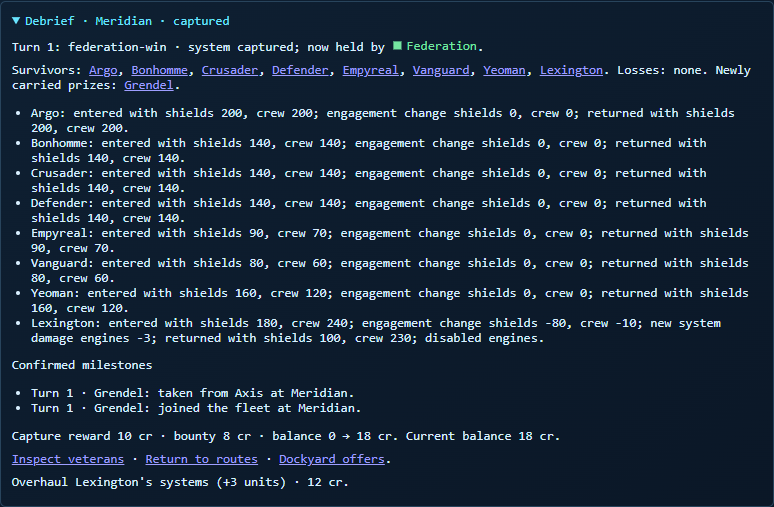
Use the debrief to distinguish new damage from the condition you brought into battle. Reopening it awards no additional credits. Full-size image (new tab)
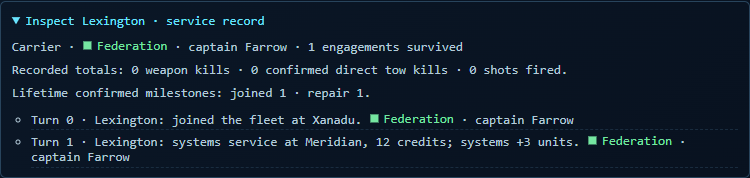
A hull keeps its identity across engagements. This record confirms a paid repair; losing the hull does not establish its captain’s fate. Full-size image (new tab)
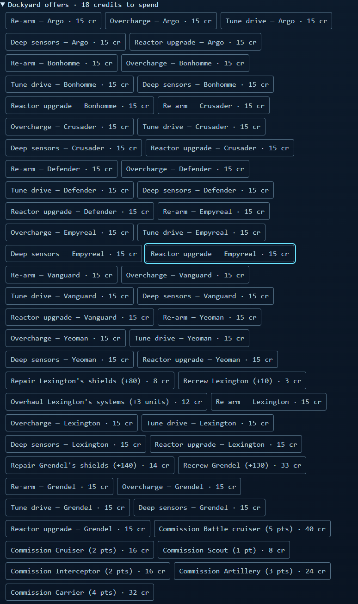
These are paid services between engagements. Inspect the cost and eligibility before purchase; battle docking follows separate recovery rules. Full-size image (new tab)
Practice Reimagined tactics
Choose an exercise here or under New game → Practice Reimagined tactics. Each small, staged situation uses ordinary Reimagined commands. Read its objective and disclosed setup, inspect the named ship, then act. Hints follow confirmed progress and can be dismissed.
Retry restores the exercise's opening, including its random sequence. Success offers the next exercise; Return to previous game restores your prior war or campaign. Practice has a separate save: reloading resumes the exercise, and no practice prize or credit enters a campaign. In real time, issue a course while paused, then use Resume to let it run.
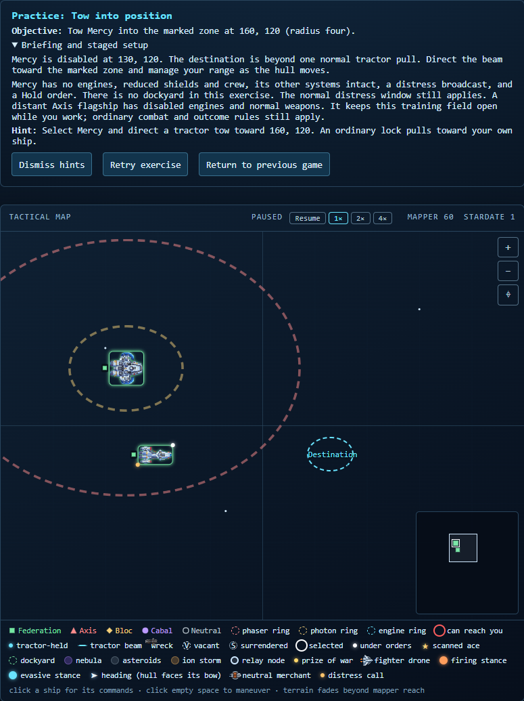
Read the exercise goal and marked destination before acting. Retry restores the setup; Return to previous game restores your war or campaign. Full-size image (new tab)
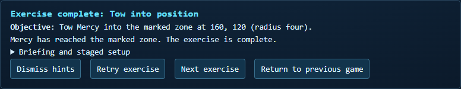
Two ordinary directed tows reached the marked zone in this example. The completion panel confirms the objective; it does not transfer ships or rewards to your saved game. Full-size image (new tab)
Accessibility and appearance
- Classic view switches to a black phosphor theme with glyphs. Ship art selects hull sprites in modern view. Both preferences persist; the ruleset stays selected separately in New game.
- Keyboard controls are listed above. Use Tab to reach controls and links; focused buttons activate normally. Escape closes help or a menu before returning to gameplay.
- Motion and impact effects honor prefers-reduced-motion. A concise status line supports screen readers.
- These written procedures contain the essential instructions; images are optional examples. Use First orders as a short introduction, then follow the contents to the task you need.
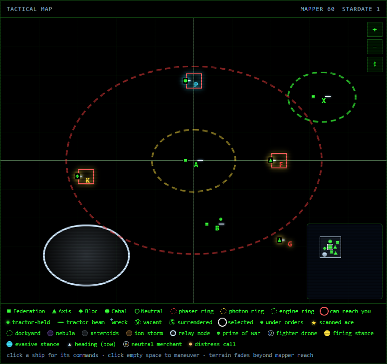
Classic view changes appearance. This example still uses Reimagined rules. Full-size image (new tab)
Save and resume
The game autosaves in this browser's local storage. Reload to resume the saved war or campaign; accepted-command history is saved alongside it. Starting a new war or campaign retires the other session. A different browser, browser profile, or cleared site storage will not contain that save. Keep the current session if you want to preserve its progress.
Find why an order is unavailable
- No target command: check the command ship's hardware, target status, distance, and Reimagined storm jamming. A red enemy outline describes its threat to you, not your firing eligibility.
- No movement: check engines and tractor hold. Turn-based exact displacements must fit current reach and remain on the map; real-time courses wait for Resume to fly.
- No boarding: the target may still have hostile crew, be a wreck or drone, lie outside transporter reach, or require more crew than your source can spare.
- Commands locked: close or submit an open dialog, wait for terminal playback or replay, or choose Finish presentation in the journal. In real time also check the shared command cycle. A completed battle cannot accept new orders.
- No docking or purchase: battle recovery needs a friendly base with enough shields, a ship within range that is not tractor-held, and a stardate boundary; paid campaign services need a friendly system, an eligible offer, and enough credits.
- A command seems lost: read Your ship for acceptance or the refusal message for rejection. A plotted course and a launched torpedo can have consequences later than their accepted order.
If an instruction still fails, report an issue with the seed, ruleset, options, command, and observed result. Those details make an opening reproducible; real-time reports also need the simulation timing of the order.
Provenance, maintenance, and contact
The original Argonaut is a tactical space-war game for DOS, released in 1992 and originally (c) 1988, 1992 by Jim Chen. This web remake is newly written HTML, CSS, and JavaScript; the supplied DOS manual was used only as a behavioral reference, and the program includes no original .COM, screenshots, or other original assets. Captain names, fleet orders, alliance doctrines, the Xanadu dockyard, the scenarios, and the Reimagined narrative are original to this remake.
The remake is maintained today by MattyGPT as an open-source project. The full source, issue tracker, and release history live in the public repository, and the game you are playing is deployed straight from it:
Rights note: the original manual declares copyright and shareware terms. This is a private restoration exercise unless the original rights holder grants permission for a public release using the Argonaut title, story, names, and other game expression.